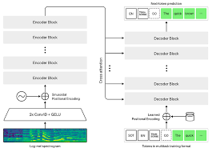

- Whisper is a general-purpose speech recognition model. It is trained on a large dataset of diverse audio and is also a multi-task model that can perform multilingual speech recognition as well as speech translation and language identification. The Whisper v2-large model is currently available through our API with the whisper-1 model name.
- Currently, there is no difference between the open source version of Whisper and the version available through our API. However, through our API, we offer an optimized inference process which makes running Whisper through our API much faster than doing it through other means. For more technical details on Whisper, you can read the paper.
